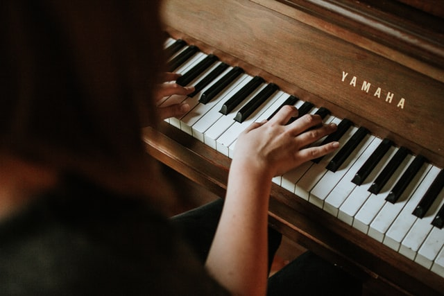

Piano

Some experts separate the two, and they do have different uses, but the basics are very similar. Some instructors believe that learning to play piano should be a prerequisite for learning any other instrument. “Despite being a single instrument, a piano covers the full spectrum of any instrument featured in the orchestra,” according to the La Habra and Corona Music Centers. It teaches coordination between hands and between the hand and the eye. ,